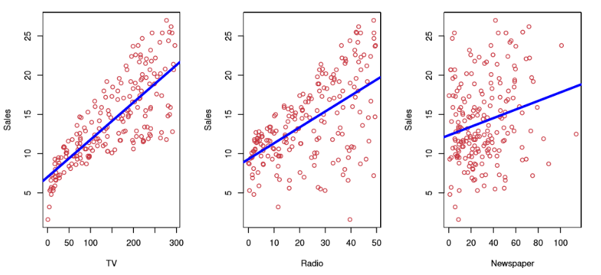

Linear regression
Simple linear regression using a single predictor X.
- We assume a model
- where \beta_0 and \beta_1 are two unknown constants that represent the intercept and slope, also known as coefficients or parameters, and \(\epsilon\) is the error term.
-
Given some \(\hat{\beta_0}\) and \(\hat{\beta_1}\) for the model cofficients, we predict future sale using \(\hat{y} = \hat{\beta_0} + \hat{\beta_1},\)
- where \(\hat{y}\) indicates a prediction of \(Y\) on the basis of \(X=x\)
- The hat symbol denotes an estimated value.
Estimation of the parameters by least squares
- Let \(\hat{y} _i = \hat{ \beta }_0 + \hat{ \beta }_ix_i\) be the prediction for Y based on the ith value of X. Then \(e_i =y_i - \hat{y}_i\) represents the ith residual
- We define the residual sum of squares (RSS) as \(RSS = e_1^2 + e_2^2 +...+ e_n^2,\) or equivalently as \(RSS = (y_1- \hat{ \beta }_0 + \hat{ \beta }_ix_1)^2+(y_2 - \hat{ \beta }_0 + \hat{ \beta }_ix_2)^2+...+(y_n -\hat{ \beta }_0 + \hat{ \beta }_ix_n)^2\)
-
The least squared approach chooses \(\hat{\beta}_0\) and \(\hat{\beta}_1\) to minimize the RSS. The minimizing values can be shown to be \(\hat{ \beta} _1 = \frac{ \Sigma _{i=1}^n(x_i- \overline{x})(y_i- \overline{y})}{ \Sigma _{i=1}^n(x_i- \overline{x})^2}, \hat{ \beta_0} = y - \hat{ \beta_1 \overline{x}},\) where \(\overline{y} \equiv \frac{1}{n} \Sigma_{i=1}^ny_i\) and \(\overline{x} \equiv \frac{1}{n} \Sigma_{i=1}^nx_i\) are the sample means.
-
Linear regression is a simple approach to supervised learning. It assumes that the dependence of Y on \(X_1,X_2,...X_p\) is linear.
-
True regression functions are never linear!
- Although it may seem overly simplistic, linear regression is extremely useful both conceptually and practically.
Linear regression for the advertising data
Consider the advertising data shown…

Questions we might ask:
- Is there a relationship between advertising budget and sales?
- How strong is the relationship between advertising budget and sales?
- Which media contributes to sales?
- How accurately can we predict future sales?
- Is the relationship linear?
- Is there synergy among the advertising media?
Group Activcity 5: Linear Regression from Scratch
- Group Activity 5: https://colab.research.google.com/github/ruiwu1990/CSCI_4120/blob/master/HW_linear_regression/HW_1.ipynb
- Finish to do section, you will have the linear regression implemtation from scratch.
| Index | Prev | Next |